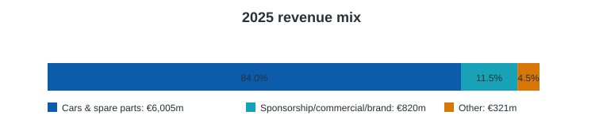
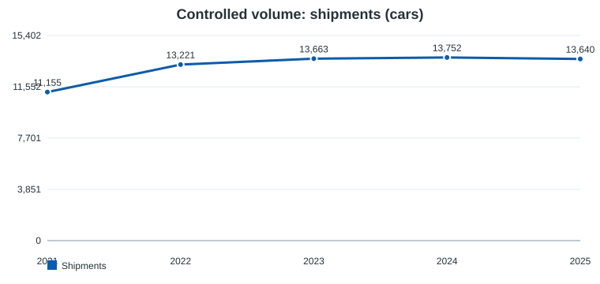
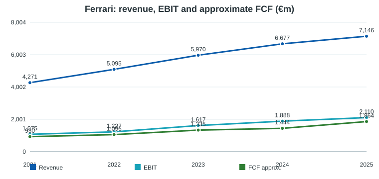
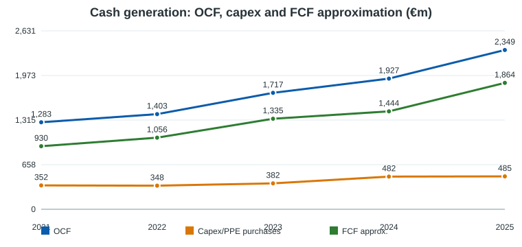

Fecha: 2026-05-21
Ticker: RACE / NYSE, Euronext Milan
Compañía: Ferrari N.V.
Tipo: Deep Dive equity pre-valoración
Conclusión operativa: no es una recomendación de inversión; es un pack para alimentar análisis y valoración del Portfolio Manager.
1. Resumen del negocio
2. Resumen ejecutivo
3. Modelo de negocio y motores económicos
4. Segmentos y lectura operativa
5. Financial forensics
6. Guidance, earnings y outlook
7. Financials históricos 5 años
8. Sector, competencia y posición relativa
9. Noticias y narrativa reciente
10. Fortalezas, riesgos y variables de modelización
11. Conclusión pre-valoración
12. Framework de valoración, escenarios y checklist
13. Bibliografía y metodología
Ferrari es un fabricante de coches deportivos y de lujo de ultra-alta gama. La tesis económica no se parece a la de un OEM tradicional: el activo principal es una combinación de marca, escasez controlada, comunidad de clientes, producto aspiracional, competición y poder de pricing. La compañía vende coches nuevos y repuestos, monetiza personalización y series especiales, obtiene ingresos de patrocinio/commercial/brand vinculados a Formula 1, WEC y lifestyle, y mantiene una actividad de servicios financieros principalmente en EE.UU.
En 2025 vendió 13.640 coches, prácticamente plano frente a 2024, pero elevó ingresos a €7.146m, EBIT a €2.110m y margen EBIT a 29,5%. La lectura clave es que Ferrari sigue creciendo más por mix, precio, personalización, series especiales y monetización de marca que por expansión agresiva de unidades. Esa es precisamente la variable que hay que proteger en valoración: crecer sin diluir escasez.

Calidad del negocio. Ferrari combina rasgos de ultra-luxury y autos: volúmenes deliberadamente limitados, backlog/order book profundo, capacidad de subir precio y personalización, márgenes estructuralmente superiores al automóvil tradicional y ROIC implícito alto. La marca reduce elasticidad de demanda, pero no elimina ciclo: UHNW confidence, China, FX, tariffs, producto y ejecución tecnológica importan.
Pregunta central de inversión. La valoración debe testar si Ferrari puede sostener un algoritmo de crecimiento de revenue mid/high single digit, margen EBIT alrededor de 29-30% o superior, y FCF industrial >€1,5bn sin sacrificar exclusividad ni asumir un capex/R&D burden excesivo por electrificación.
Lo que importa para valorar:
Perfil financiero inicial. Ferrari cerró 2025 con cash de €1,467m, debt total de €2,884m, pero solo €32m de Net Industrial Debt. En Q1 2026 pasó a €388m de Net Industrial Cash. Para análisis de equity conviene separar deuda de servicios financieros de la caja/deuda industrial.
Ferrari gana dinero con una fórmula muy específica:
La compañía insiste en una cartera tecnológicamente neutral: combustión interna, híbrido y eléctrico. El punto crítico es que el primer full electric, Ferrari Luce, y los nuevos híbridos deben preservar emoción, precio y margen.
Ferrari no reporta segmentos operativos al estilo industrial clásico; usa categorías de ingresos. El mix 2025 fue:
| €m | 2025 | % ventas | 2024 | % ventas | 2023 | % ventas |
|---|---|---|---|---|---|---|
| Cars and spare parts | 6.005 | 84,0% | 5.728 | 85,8% | 5.119 | 85,7% |
| Sponsorship, commercial and brand | 820 | 11,5% | 670 | 10,0% | 572 | 9,6% |
| Other | 321 | 4,5% | 279 | 4,2% | 279 | 4,7% |
| **Net revenues** | **7.146** | 100% | **6.677** | 100% | **5.970** | 100% |
Lectura: cars/spare parts sigue siendo el core, pero sponsorship/commercial/brand está creciendo más rápido. Esto es positivo si amplía monetización de marca sin trivializarla. Riesgo: lifestyle/licensing mal gestionado puede diluir percepción de ultra-lujo.
Geografía 2025 por unidades: EMEA 46,5%, Americas 28,9%, China/HK/Taiwan 6,9%, Rest of APAC 17,7%. La caída de China desde niveles anteriores es una variable a monitorizar, aunque Ferrari tiene capacidad de reasignar supply.


El crecimiento 2021-2025 es de alta calidad: revenue +67%, EBIT +96%, OCF +83%. La expansión de margen EBIT desde ~25,2% en 2021 a 29,5% en 2025 sugiere que pricing/mix han superado inflación, capex de producto y D&A.

OCF 2025 fue €2.349m. Capex/PPE purchases en la tabla XBRL son €485m, pero Ferrari define industrial FCF tras inversiones en PPE e intangibles; por eso la métrica de management relevante es Free Cash Flow from Industrial Activities: €1.535m en 2025. La diferencia importa: no usar una definición de FCF simplificada sin reconciliarla con capitalized development costs.
Capex total 2025 fue €1.013m: €458m intangibles y €555m PPE. Ferrari capitalizó €421m de development costs, 41,5% del R&D total incurrido. La transición hybrid/EV y el e-Building elevan intensidad de inversión; la pregunta no es si capex sube, sino si el cliente Ferrari paga ese capex vía precio/mix sin erosionar margen.
| €m | 2025 | 2024 |
|---|---|---|
| Cash & equivalents | 1.467 | 1.742 |
| Total debt | 2.884 | 3.352 |
| Net debt | 1.417 | 1.610 |
| Net Industrial Debt | 32 | 180 |
| Available liquidity | 2.017 | 2.292 |
El leverage industrial es bajo. La deuda consolidada incluye securitizations/financial services y no debe leerse como deuda industrial pura. En Q1 2026, Ferrari reportó Net Industrial Cash de €388m.
Ferrari devuelve capital de forma agresiva: dividendos pagados a owners de €530m en 2025 y buybacks de €785m. En 2026 aprobó dividendo de aprox. €640m y anunció un nuevo buyback multianual de aprox. €3,5bn hasta 2030. Esto puede ser accretive si el negocio mantiene crecimiento y ROIC, pero a múltiplos altos el buyback debe evaluarse críticamente.
Q1 2026 confirmó resiliencia:
| Métrica Q1 2026 | Resultado |
|---|---|
| Net revenues | €1.848m, +3% YoY / +6% constant currency |
| EBIT | €548m |
| EBIT margin | 29,7% |
| Net profit | €413m |
| EBITDA | €722m |
| EBITDA margin | 39,1% |
| Industrial FCF | €653m |
| Shipments | 3.436, -157 YoY |
| Net Industrial Cash | €388m |
Management confirmó guía 2026:
| Métrica | Guidance 2026 |
|---|---|
| Net revenues | ~€7,50bn |
| Adjusted EBITDA | ≥€2,93bn |
| Adj. EBITDA margin | ≥39,0% |
| Adjusted EBIT | ≥€2,22bn |
| Adj. EBIT margin | ≥29,5% |
| Adj. diluted EPS | ≥€9,45 |
| Industrial FCF | ≥€1,50bn |
Lectura: el guidance implica crecimiento moderado, margen defendido y FCF industrial estable pese a model change-over, D&A, brand/racing/digital spend, FX y tariffs. El order book hacia final de 2027 reduce visibilidad de downside inmediato, pero no elimina riesgo de mix y ciclo lujo.
| €m | 2021 | 2022 | 2023 | 2024 | 2025 |
|---|---|---|---|---|---|
| Revenue | 4.271 | 5.095 | 5.970 | 6.677 | 7.146 |
| Operating profit / EBIT | 1.075 | 1.227 | 1.617 | 1.888 | 2.110 |
| Net profit | 833 | 939 | 1.257 | 1.526 | 1.600 |
| Operating cash flow | 1.283 | 1.403 | 1.717 | 1.927 | 2.349 |
| PPE capex / purchases | 352 | 348 | 382 | 482 | 485 |
| Approx. FCF before dividends/buybacks | 930 | 1.056 | 1.335 | 1.444 | 1.864 |
| Car shipments | 11.155 | 13.221 | 13.663 | 13.752 | 13.640 |
| Operating margin | 25,2% | 24,1% | 27,1% | 28,3% | 29,5% |
| FCF / net profit approx. | 111,6% | 112,5% | 106,2% | 94,6% | 116,5% |
| €m | 2021 | 2022 | 2023 | 2024 | 2025 |
|---|---|---|---|---|---|
| Assets | 6.864 | 7.766 | 8.051 | 9.497 | 9.628 |
| Equity | 2.211 | 2.602 | 3.071 | 3.543 | 3.915 |
| Cash & equivalents | 1.344 | 1.389 | 1.122 | 1.742 | 1.468 |
| Borrowings/debt | 2.630 | 2.812 | 2.477 | 3.352 | 2.884 |
| Dividends paid | 160 | 250 | 329 | 440 | 530 |
| Treasury shares purchased | 231 | 397 | 461 | 581 | 785 |
Régimen 2021-2025: Ferrari pasó de recuperación post-COVID a compounder de lujo con margen en expansión. La compañía ha probado poder de precio/mix, pero 2025-2026 será una prueba de normalización: F80, nuevos modelos, primera EV, tariffs y China.
El peer set debe dividirse por función analítica:
Ferrari merece prima frente a OEMs por escasez y margen, pero no debe valorarse ciegamente como luxury pure-play: tiene fábricas, capex, homologación, ciclo producto, motorsport y riesgo tecnológico.
Fortalezas
Riesgos
Variables de modelo
Ferrari parece un compounder de calidad excepcional, pero la valoración debe evitar dos errores: tratarla como OEM cíclico normal o como luxury pure-play sin capital intensity. El núcleo de la tesis es si puede seguir monetizando escasez y tecnología sin romper el contrato psicológico con el cliente: exclusividad, emoción, performance y pertenencia.
El Deep Dive deja tres tests para la valoración:
1. Scarcity test: ¿cuánto pueden crecer unidades sin erosionar pricing?
2. EV economics test: ¿Ferrari Luce y la cartera hybrid/EV sostienen margen y ASP?
3. FCF durability test: ¿industrial FCF >€1,5bn es piso sostenible o pico asistido por mix/order book?
Usar múltiplos de luxury y auto como límites, no como respuestas. Para Ferrari, EV/EBIT, P/E y FCF yield son más útiles que EV/Sales. El modelo debe incluir buybacks explícitos.
| Variable | Bear | Base | Bull |
|---|---|---|---|
| Shipments | Plano/ligero descenso | Crecimiento bajo controlado | Crecimiento moderado sin dilución |
| ASP/mix | Normalización post-F80 | Mix positivo gradual | Personalización y Special Series sostienen upside |
| EBIT margin | 27-28% | 29-30% | >30% sostenible |
| Industrial FCF | <€1,3bn | €1,5-1,7bn | >€1,8bn |
| EV transition | Margen dilutivo | Neutral con pricing | Accretive por exclusividad tecnológica |
| China/tariffs | Headwind material | Gestionable | Reasignación de supply compensa |
☐ Definir shipment CAGR 2026-2030 compatible con escasez.
☐ Modelar ASP/mix separado de volumen.
☐ Separar industrial net cash/debt de financial services.
☐ Normalizar capex incluyendo intangibles/development costs.
☐ Incluir buyback y dividendos explícitos.
☐ Sensibilizar margen EBIT 27-31%.
☐ Sensibilizar terminal multiple / FCF yield frente a luxury peers.
☐ Añadir descuento si EV execution reduce pricing power.
Fuentes primarias
https://www.sec.gov/Archives/edgar/data/1648416/000164841626000024/race-20251231.htm
https://www.sec.gov/Archives/edgar/data/1648416/000164841626000018/fnvfy2025results.htm
https://www.sec.gov/Archives/edgar/data/1648416/000162828026030266/ferrarinvinterimreport-033.htm
https://www.sec.gov/Archives/edgar/data/1648416/000164841626000062/fnvq12026results.htm
https://data.sec.gov/api/xbrl/companyfacts/CIK0001648416.json
Metodología
Limitaciones